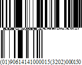

GS1 - DataBar
The GS1 DataBar bar code is based on a family of symbols often used in the GS1 DataBar Coupon (coupon codes commonly used in retail).
These bar codes can encode up to 14 digits, which makes them suitable for GTIN 8, 12, 13 and 14.
GS1 DataBar Expanded and GS1 DataBar Expanded Stacked can encode up to 74 numeric or 41 alphanumeric characters, and provide the capability to utilize all GS1 Application Identifiers (e.g., expiration date, batch and serial number). These bar codes are often used in manufacturer coupons.

The following properties are specific to the GS1 DataBar type and available in the Properties panel under the Symbology property:
FNC1 Functional Character
Specifies the symbol (or set of symbols) in the bar code text that will be replaced with the FNC1 functional character when the bar code's bars are drawn.
Segments In Row
Specifies the number of data segments per row in the Expanded Stacked type of a GS1 DataBar bar code.
Type
Specifies the type of a GS1 DataBar bar code.